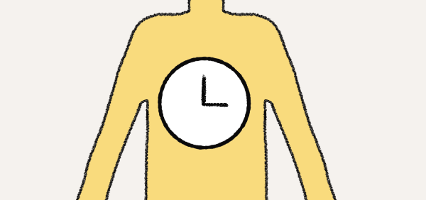
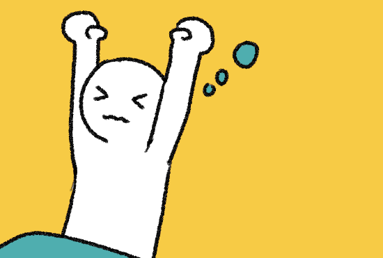
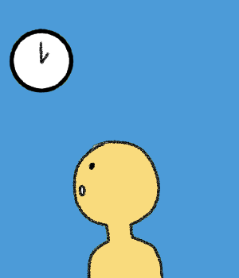
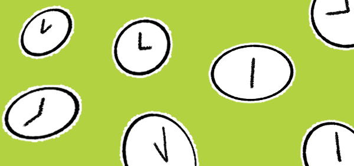
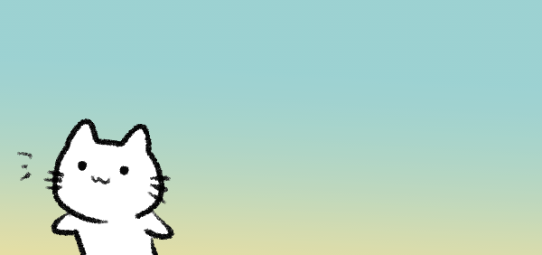
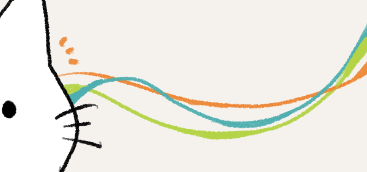
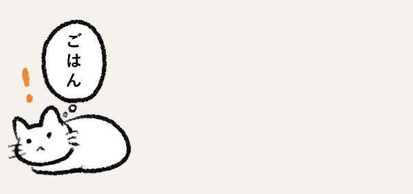
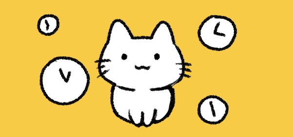
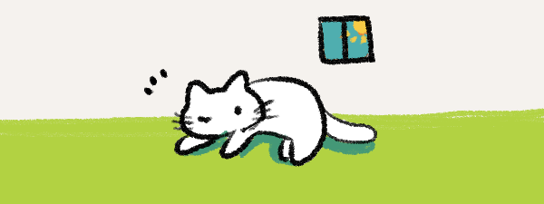

暗くなると、1日の終わりを感じたりします。
私たち人間は、朝の光で一日の始まりを感じたり、

また、体の中にも「体内時計」があり、
食事や睡眠のリズムをある程度は自分の感覚でつかんでいます。

「7時に起きる」「12時にお昼を食べる」

けれど、それでも私たちは最終的に時計を見て行動します。

時間は数字で区切られ人と同じリズムで動くための
共通の目印になっています。

しかし、時計のないねこは光・温度・音・匂いといったまわりの環境から
時間を感じ取っているのです。

たとえば、人と同じように明るさの変化から自然に時間読み取っています。

また、皮膚や鼻がわずかな温度の違いを感じ取り、
時間や季節の違いもわかるようです。

家ねこの場合だと、飼い主の生活パターンを覚えてご飯の時間がわかったりもします。

このように、ねこはその日の光・音・空気・匂いがつくる環境のリズムの中で動いているようです。

数字で決められた時間ではない、
時計がある前の自然な時間の流れをねこは持っているのかもしれません。